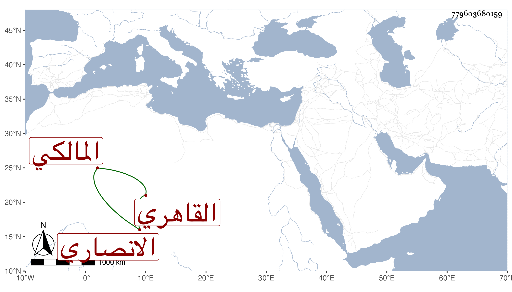

0902Sakhawi.DawLamic.ITO20230111-ara1.EIS1600.779603680159
Biography ID: 779603680159
أحمد بن عبد العزيز بن محمد بن عبد الله بن عبد العزيز الشهاب بن البدر الانصاري القاهري المالكي ويعرف كأبيه بابن عبد العزيز . نشأ فسمع على شيخنا وغيره ودار مع الطلبة قليلا واستقر في المباشرة بجامع طولون والناصرية والأشرفية وغيرها بعد أبيه وحسن حاله بالنسبة لما قبله وتزوج زوجة التقي القلقشندي بعد وذكر بالدربة والعقل والتودد والخبرة والمباشرة واليقظة فيها . ومات مزاحما للخمسين ظنا في ليلة الجمعة خامس صفر سنة ثمان وثمانين بعد تعلله مدة طويلة وفقد بصره رحمه الله وعفا عنه .
